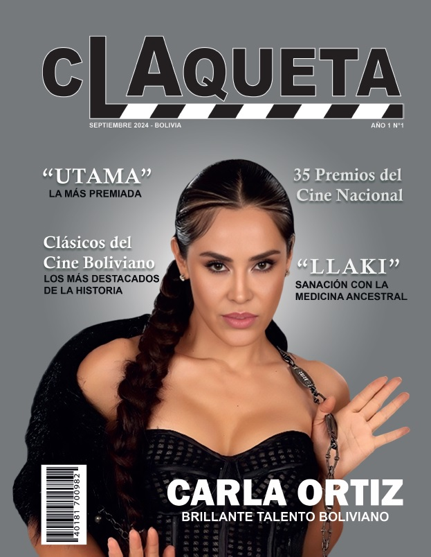

<!DOCTYPE html>
<html lang="en">
    <head>
        <meta charset="UTF-8" />
        <title>Title</title>
    </head>
    <body></body>
</html>
<h1> Experiencia </h1>
<p>Diseñadora gráfica a la que le apasiona crear ilustraciones y piezas visuales en Illustrator, disfruta del diseño y la maquetación editorial en InDesign, y complementa su trabajo con la edición de videos en Premiere Pro. Ha creado la identidad de 2 marcas para microempresas, diseñado una revista y desarrollado 3 manuales de marca, demostrando su capacidad para combinar creatividad, técnica y estrategia visual en cada proyecto.</p>
<h2> Proyecto: Cortometraje "La carta de la muerte"</h2>


<p>Directora de cortometraje.</p>
<h2> Proyecto: Revista "La Claqueta"</h2>

<p>Diseñadora y editora de la revista.</p>
